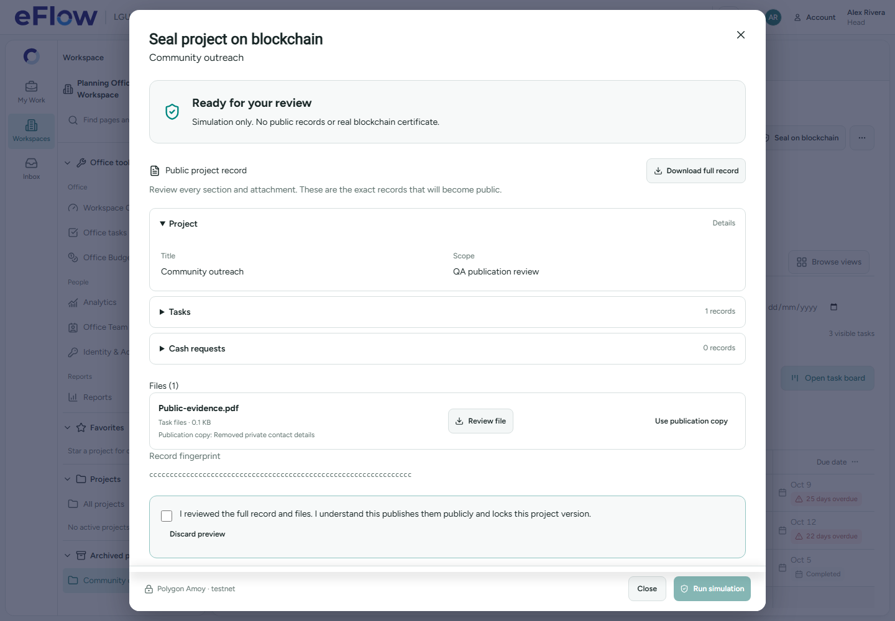
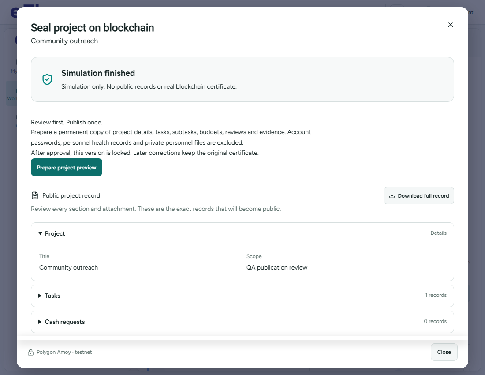
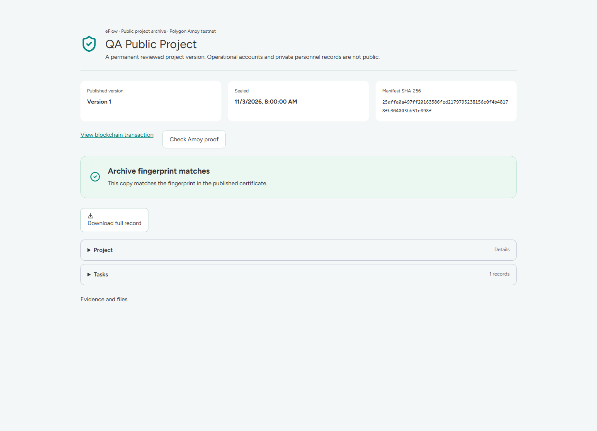

Desktop verification · 3 November 2026. Implementation · Checks and limitations · Deployment package
These are synthetic browser fixtures. They demonstrate the interface and safeguards; they are not proof that a real project has been published on Amoy.


